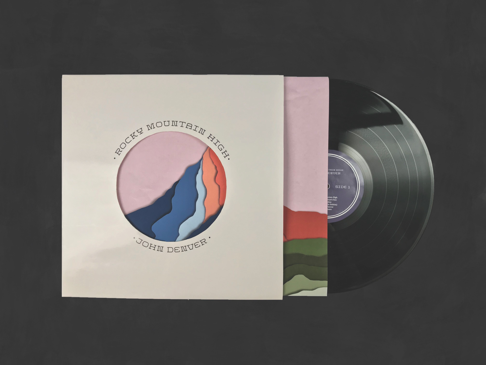

Recorded in Aspen, Colorado, in 1972, this redesign of John Denver’s infamous album, Rocky Mountain High, utilizes Wild West-inspired typefaces to capture the record’s genre, and bright colors to match the music’s liveliness. Both the 12" album and 7" single feature cut-outs on the front of the cover, with the single’s eagle-shaped die cut influenced by the lyrics off the album’s titular song; “I know he’d be a poorer man if he never saw an eagle fly.” This album is marketed towards all country folk fans.
